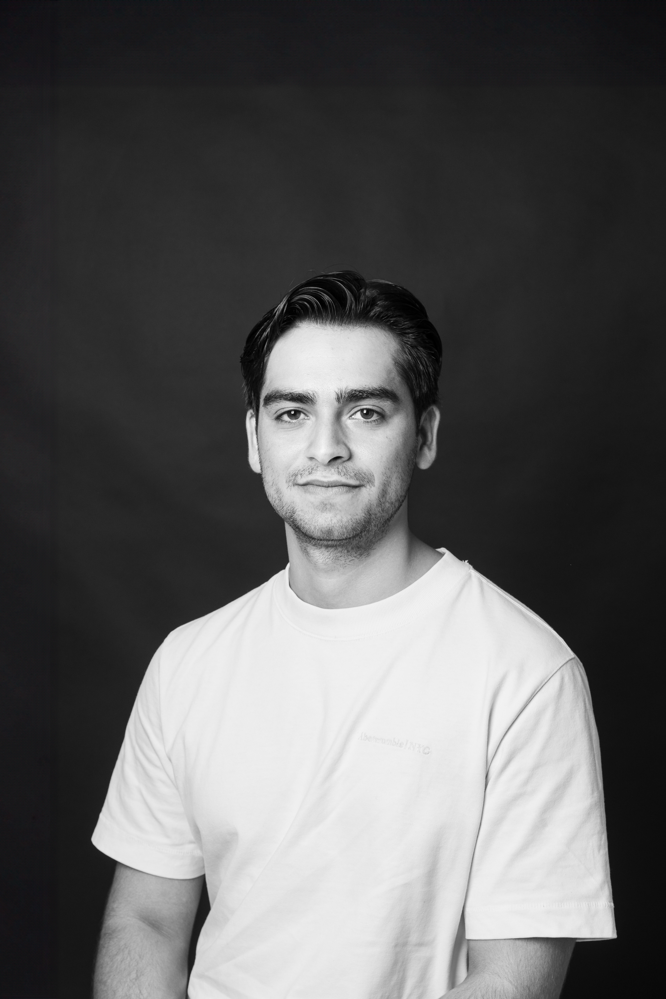

Jacob Saliba
Multimedia Artist & Researcher
Jacob Saliba is a Maltese creative technologist and multimedia artist whose work explores the intersection of storytelling, interactivity, immersive media, and spatial experience. His practice combines digital art, game development, XR technologies, generative systems, sound, and audience-centred design to create experiences that blur the boundaries between the physical and digital worlds.
He currently leads the multimedia team for interactive experiences at the Digitisation Unit within Heritage Malta, where he works on immersive exhibitions, game development, digital heritage interpretation, 3D digitisation, MR experiences, and large-scale multimedia installations for museums and cultural institutions. His projects focus on transforming heritage and cultural narratives into engaging contemporary experiences through technology-driven design.
Alongside his professional practice, Jacob is a visiting lecturer at the University of Malta, teaching within the Digital Arts Department across areas including interactive art, computational art, audio production, creative technologies, and immersive media workflows.
He is also the co-founder of Insynk Collective, a creative production company working across multimedia installations, live events, visual experiences, and interdisciplinary artistic productions.
His areas of interest include immersive storytelling, creative technology, systemic and generative art, mixed reality, game design, embodied interaction, spatial audio, interactive installations, digital heritage, computational art, and the development of new narrative languages for hybrid physical-digital experiences.
Throughout his career, Jacob has contributed to a diverse range of productions, cultural projects and exhibitions, including set and multimedia design collaborations with Żfin Malta (Malta's national dance company), immersive heritage experiences such as the Malta Dockyard Experience, and multiple live events involving lighting design and interactive media.
Heritage Malta · [Client] · [Institution] · [Partner]